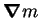

The mathematical description of vapour transport through a confined gas developed in chapter 2 involves two terms not usually encountered in computational fluid dynamics: the interdiffusion term in the energy equation (2.55); and the interfacial velocity boundary condition (2.59). Implementing these with a `black-box' package, though possible (Suehrcke & Harris 1995; McBain & Harris 1998), is not nearly so straightforward as with Fastflo.
Since the gradient of the mass fraction, , is required both in the interior of the domain, for the interdiffusion term of the energy equation, and on the boundary, for the interfacial velocity boundary condition, it is conveniently calculated at each node and placed on the `local vector stack' by a command of the form
e v300 = [grad] {v104}
inside the problem for the inner (mass fraction, temperature and momentum)
loop, where it is understood that v104 holds
the values of the mass fraction from the last inner iteration.
The intermediate solution vector v300
is then available for use in statements defining both the field
equations and boundary conditions.
The old values are used in the interdiffusion term, as this is analogous to the treatment of the other advective terms, where the advecting velocity is that from the last iteration. The interdiffusion term is a type of advection term, as it represents the incremental energy advected by the diffusive flux of vapour. Thus, a Picard linearization is used for all the nonlinear terms in the inner loop.
Though the interfacial velocity boundary condition
(2.59) is linear in the unknowns  and
and
 , convergence was only obtainable by using old values for
,
perhaps because the condition must be a condition on
and not
on
, convergence was only obtainable by using old values for
,
perhaps because the condition must be a condition on
and not
on  (§3.2.1). Since these were already required for the
interdiffusion term, no extra computational cost was incurred
evaluating it.
(§3.2.1). Since these were already required for the
interdiffusion term, no extra computational cost was incurred
evaluating it.
A sample Fasttalk file can be found in appendix A.